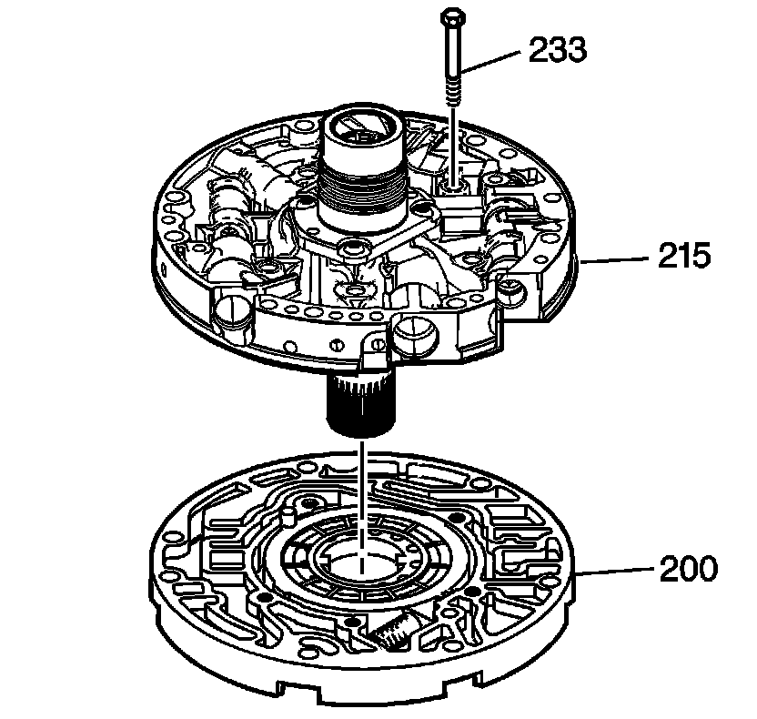
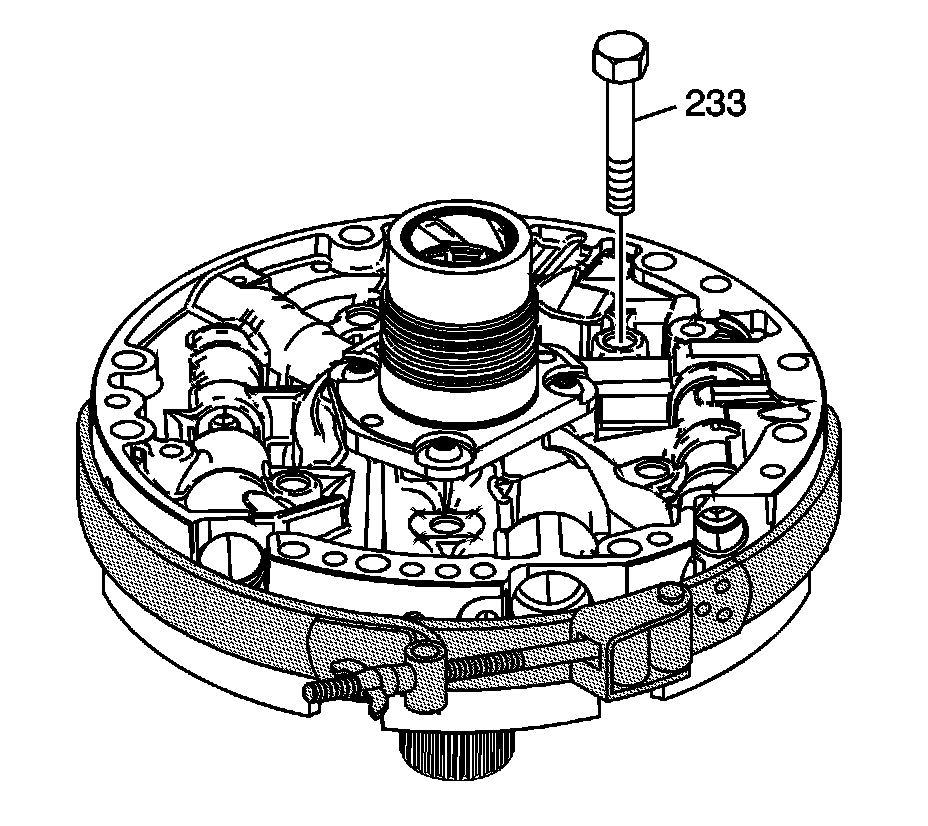

Oil Pump Cover and Body Assemble
Oil Pump Cover and Body Assemble
Tools Required
J 21368 Pump Body and Cover Alignment Band

1. Place the oil pump cover onto the oil pump body and put stator shaft through a hole in the bench.
2. Install the pump cover bolts (233) finger tight only.

3. Install the J 21368.
Notice: Refer to Fastener Notice.
4. Tighten the pump cover bolts (233).
Tighten the bolts to 24 N.m (18 lb ft).
5. Remove the J 21368.